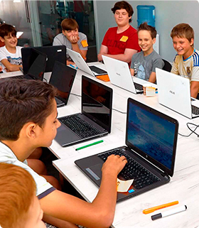

<section class="section-first">
    <div class="container">
        <p class="first__text">За останні 5 років кількість дітей, які вміють користуватися комп'ютером збільшилася приблизно в 10 разів</p>
        <picture class="first__img">
            <source media="(min-width: 768px)" srcset="../images/section-first/child-foto-tabl.jpg">
            <source media="(min-width: 1200px)" srcset="../images/section-first/child-foto-deks.jpg">
            
        </picture>
        <p class="first__description">Програма навчання  створюється за участі  відомих спеціалістів ІТ сектору, успішних стартаперів, бізнес тренерів і підліткових психологів.</p>
    </div>
</section>